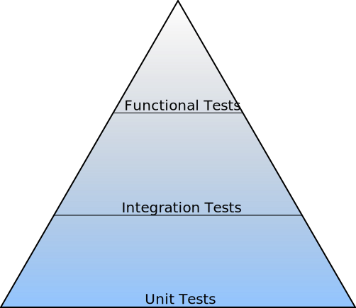
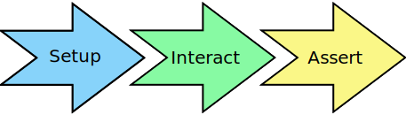

What is Autopilot, and what can it do?¶
Autopilot is a tool for writing functional tests. Functional tests are tests that:
- Run out-of-process. I.e.- the tests run in a separate process to the application under test.
- Simulate user interaction. Autopilot provides methods to generate keyboard, mouse, and touch events. These events are delivered to the application under test in exactly the same way as normal input events. The application under test therefore cannot distinguish between a “real” user and an autopilot test case.
- Validate design decisions. The primary function of a functional test is to determine whether of not an application has met the design criteria. Functional tests evaluate high-level design correctness.
Where is Autopilot used?¶
Autopilot was designed to test the Unity 3D shell. However, since then it has been used to test a number of other applications, including:
- Core Ubuntu GUI applications.
- Mobile phone applications for the Ubuntu Phone & Ubuntu Tablet.
How does Autopilot fit with other test frameworks?¶
Autopilot exists at the apex of the “testing pyramid”. It is designed to test high-level functionality, and complement a solid base of unit and integration tests. Using autopilot is not a substitute for testing your application with unit and integration tests!. Autopilot is a very capable tool for testing high-level feature functionality. It is not an appropriate tool for testing low-level implementation details.
Autopilot is built on top of several other python test frameworks, including:
- Python Testtools -
AutopilotTestCasederives from the testtoolsTestCaseclass, which allows test author to use all the extended features found in testtools. Specifically, Autopilot includes theEventuallymatcher class, which allows test authors to make assertions about the application under test without having to worry about the timing between the tests and the application under test. - Python Test Scenarios -
AutopilotTestCasecontains the necessary plumbing in order to allow test authors to use test scenarios out of the box. This is extremely useful when you want to test several different modes of operation. - Python Test Fixtures - Several parts of autopilot are built as fixtures. While this is rarely exposed to the test author, it can be useful to know that this functionality is always present whenever autopilot is installed.
What do Autopilot Tests Contain?¶
A typical autopilot test has three distinct stages:
The Setup Stage
There are several concerns that must be addressed in the setup Phase. The most important step is to launch the application to be tested. Most autopilot test suites launch the application under test anew for each test. This ensures that the test starts with the application under test in a known, clean state. Autopilot can launch normal applications, launch applications via upstart, or launch apps contained within a click package.
Tests may also wish to take other actions in the setup stage, including:
- Setting environment variables to certain values.
- Starting external applications that are required for the test to run.
- Creating files or folders (or any kind of external data) on disk.
The purpose of the setup stage is to make sure that everything that is required for the test to run is in place.
The Interaction Stage
Once the setup has been completed, it’s time to start interacting with your application. This typically involves generating input events. For example, if you are testing a text editor you might have a test whose specification is similar to the following:
Type some text into the document area, open the 'Edit' menu and click
the 'Search and Replace' menu item.
During this stage you will most likely need to read the applications internal state. For example, your test will need to know where the ‘Edit’ menu is on the screen. Thankfully, autopilot takes care of the details, allowing you to write expressive tests.
The Assertion Stage
The final stage is where you determine if your test should pass or fail. Most tests will contain more than one assertion (why?). Autopilot contains several custom assertions that make testing high-level concepts easier.